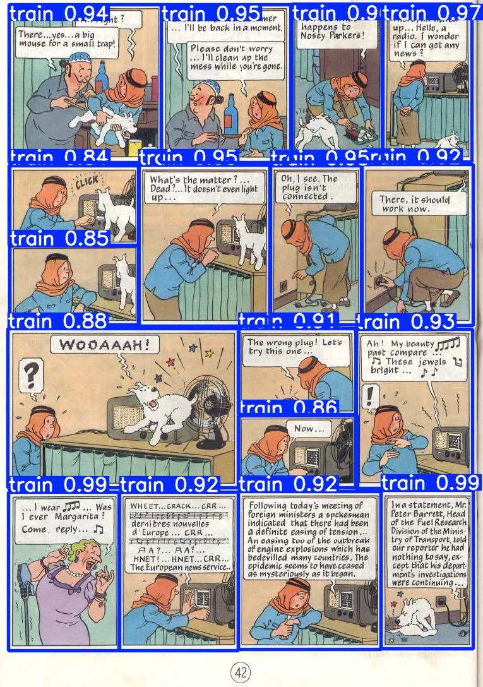
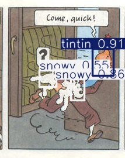

Computer Vision with Tintin
Tintin was a key part of my childhood. I first discovered the
novels in 2017 at my uncle's
apartment in India, and I read through all the comics and watched the full TV series shortly thereafter.
Now, almost a full decade later, I come back to the series in this "blog" post (which is a first for me). The
conception of this project came from me thinking about a good way to apply the skills I learned from Daniel
Bourke's
PyTorch for Deep
Learning & Machine Learning course. For passion projects like that, I find that there
does need to be some
genuine connection between the subject and yourself,
otherwise it'll be far too boring.
After brainstorming for a bit, something related to Tintin seemed like a nice starting point for a project,
and
I searched for Tintin-based data analysis, to see if there was anyone doing what I was thinking about.
Lo-and-behold, a really well made
Tableau dashboard contained analysis of pretty much everything I could
think
of relating to Tintin data.
While their insights are cool, they specifically mentioned that they got the data through manual collection,
which I thought was too time consuming for me to do, should I continue down that path. One of the chapters in
the course that I was watching was about computer vision, and how machine learning models can understand
patterns within pixels to identify classes of objects. A revelation: what if I used
computer vision to recreate
the same plots that were on the dashboard? That's what this project is about. Using machine learning
to automate
something that was initially done manually: identifying characters across different panels, pages, and books.
I'll see where machine learning fails, see what it does well, and ultimately gain some insight on the comic
strips that made up my youth.
Getting the data
I sourced all of the Tintin books from online scans, mostly from archive.org. I excluded
Tintin in the Land
of
the Soviets since it had a very
art style,
Tintin in the Congo since its depictions are pretty
racist,
and
Tintin in Alph-Art, since it was
unfinished. To get the PDFs
into a format that was compatible with computer
vision models, though, I had to split each of the PDFs into JPGs, which were named according to their page
number. I did that latter part through Adobe Acrobat.
Sample page files.
There's one more level of granularity beneath each page: the panels. To my
knowledge, however, there wasn't a
clear way of splitting each page into individual panels from ordinary tools. It's not like the panels are placed
in the same location every time either, so you would have to identify where a panel was, and then cut it out.
Three different pages showing different panel arrangements.
It's here that I built my first model, to split each page into individual panel components. To do so, I watched
a YouTube tutorial, which
listed out the process pretty clearly. I used Label Studio to produce a set of images and
corresponding panel locations, for the model to train from.
Manual panel labeling.
I arbitrarily chose 44 such pages to annotate, which, given an average of about 10 panels per page, gives over
400 panels for the model to train from. The model itself was the YOLO (You Only Look
Once) v11 model, trained on
a Tesla T4 GPU through Google Colab. Here's a look at some sample predictions from the model:

Sample predictions from the panel-obtainer model.
As you can see, it does very well in identification. From a random sample of 100 pages, I counted that 95 were
marked with full accuracy, yielding a confidence interval of (0.8872, 0.9836) for all 1,325 pages.
Four of the
errors were false positives, which is good, since that just means extra data is being recorded (rather than some
data being missed).
To actually
extract the panel
data, all I did was crop each of the rectangles from the predictions, and adjust the name slightly to create an
ID for each image. A sample panel from my adjustment would be:
"17_tintin_and_the_explorers_on_the_moon_page_27_panel_08.jpg".
The aforementioned 17_tintin_and_the_explorers_on_the_moon_page_27_panel_08.jpg.
Classifying people
With the panels in place, I was ready to start classifying people. Having looked
at several panels, I set a
couple of rules for what I could classify as a character. One, I would need to only look at a person's face (and
hat, if needed) either head-on or from behind, since a lot of panels have the characters looking out at
something in the foreground. That's to enable the model to identify characters that sometimes change outfits
across and within novels. Second, to not confuse the model with overly difficult images, I used my discretion to
only classify people that were easily identifiable without prior context and the majority of their face or head
in frame. For instance, the images below were each not classified: on the left, Tintin is wearing a disguise
that could mislead a model's training and on the right, even though it's Thomson and Thompson in the panel, a
majority of their faces are not within the frame.
Images that I did not annotate with characters.
Here are some examples of images that were indeed classified, and how exactly I classified them.
Images that I annotated with characters.
I annotated 400 such panels, which was a combination of random selection as well as me taking from the
beginnings of Explorers on the Moon (a book that contains all 5 main characters) and Land of Black
Gold (whose
opening has a Thomson and Thompson sequence).
With the annotations in place, the training was similar to before, with the aforementioned YOLOv11 model.
Classification results
The results of the model's predictions proved quite accurate: 84% of a sample of 100
panels were fully accurate
(meaning all people were labeled correctly, with no false positives or negatives) [95% conf: (0.7532, 0.9057)].
Some sample images are below to illustrate
some of the model's feats.
Image predictions from the person-obtainer model.
It's really fascinating (and kind of scary) to see something that took about 25 hours (start to finish) have
results that are this powerful.
However, there were plenty of faults within the model. For one, it seems Snowy was the most difficult to
identify, which makes sense: he's only drawn with black and white, so it's difficult to find patterns as
compared to other
characters who have color in their face/hair. Plus, he's mostly seen at a distance, so training images can be
low quality.
Precision-Recall curve for all five classes.

Incorrect Snowy class predictions.
Some of the errors for Tintin's classifications show the importance of color his
orange hair seems to be
something key that the model picked up on in identification. That helps when his back might be turned to the
"camera" but it can be confusing when there's other orangish colors in the scene.
Incorrect Tintin class predictions.
Lastly, Thomson and Thompson proved to be a bit difficult for the model to key in on. There's probably a number
of reasons for that, but my guess is that they don't have particularly unique
faces (a lot of characters look
like them) and their mustaches are very
thick, which can cover up important and distinguishing facial features.
Incorrect Thompson and Thomson class predictions.
But even with these faults, the overall accuracy and the power of such a model make this whole process fruitful.
Analysis
With the classifications in place, it was relatively simple to get the predictions of the model and map them to
their respective images to obtain appearance numbers for every character, separated by panel, page, and novel.
From there, I exported the results to R (and eventually Adobe Illustrator) to reproduce
the same visuals that
inspired this whole process in the
first place.
Chart showing character appearances across books and pages.
You can compare this output to the original
Tableau dashboard, and I find it to be
quite accurate.
Obviously,
the titular characters in Tintin and Snowy appear most frequently, with Thomson and Thompson making "streaky"
appearances across the novels, since they are mostly used as a "cutaway" gag alongside the main plot.
A sample "cutaway" gag for Thomson and Thompson.
For both Haddock and Calculus, you can see exactly when their characters are first introduced, though there are
some false positives in earlier books.
There were some more
visuals that I produced in the R code, but
the above proved to
be the most insightful.
Conclusion
Having completed what I set out to do at the beginning of this process, I can call this project a success. It's
certainly not the most accurate model of characters, but from the above, it does well when tested. I view
this project as a starting point for future computer vision models I might create, to showcase some of the
benefits and faults of such deployment. Still, even if this project is shelved away for years, I'm sure it'll
come back to my mind as inspiration, much like the comics did in the first place.